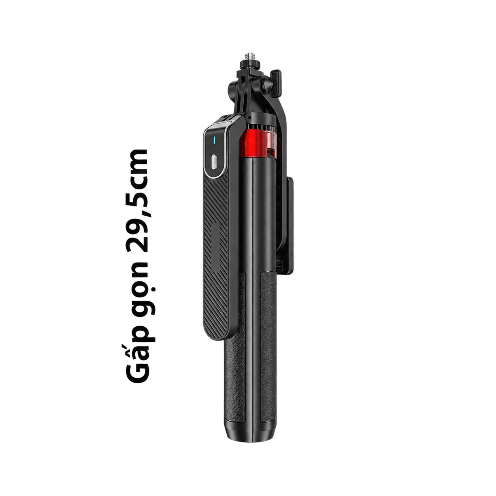

Mở bốn chân. Đặt trên mặt phẳng.
Cấu trúc bốn chân gập dưới đáy tạo mặt tiếp xúc rộng hơn khi đặt đứng. Hãy mở hết hành trình chân trên mặt phẳng cứng và kiểm tra trọng tâm trước khi tăng chiều cao.
GAERU P185 · GẬY CHỤP HÌNH & CHÂN ĐỠ 4 CHÂN
Gậy chụp hình cầm tay kết hợp bốn chân đỡ gập và điều khiển từ xa Bluetooth. Linh hoạt chuyển đổi từ góc selfie di động sang chân đứng tự quay chỉ trong vài thao tác.

CHỦ ĐỘNG GÓC ĐẶT MÁY
Khi đi du lịch, quay vlog một mình hay chụp ảnh nhóm, GAERU P185 giúp bạn đặt điện thoại ở độ cao và khoảng cách mong muốn mà không cần nhờ người cầm máy.
Cấu trúc bốn chân gập dưới đáy tạo mặt tiếp xúc rộng hơn khi đặt đứng. Hãy mở hết hành trình chân trên mặt phẳng cứng và kiểm tra trọng tâm trước khi tăng chiều cao.
Dễ dàng bỏ vào túi xách hoặc balo khi thu gọn, đồng thời mở rộng góc nhìn toàn cảnh khi cần chụp tập thể hoặc quay toàn thân.
Điều khiển gắn gọn trên thân gậy và tháo rời nhanh khi bạn đứng xa máy. Hỗ trợ sạc qua cổng Type-C với dung lượng pin tích hợp 55 mAh.
Đầu kẹp xoay linh hoạt để chọn khung dọc cho TikTok/Reels hoặc khung ngang cho YouTube/ảnh nhóm, kèm khớp ren 1/4 cho thiết bị tương thích tải trọng.
CẤU HÌNH & CÁCH BỐ TRÍ
Lựa chọn độ cao và cách đặt phù hợp với không gian thực tế để vừa có góc máy đẹp, vừa giữ an toàn cho điện thoại của bạn.
Đối chiếu phụ kiện theo đơn hàng và kiểm tra độ ổn định của chân đỡ tại đúng vị trí bạn định đứng quay.
GAERU TRONG CUỘC SỐNG CỦA BẠN
Đặt máy từ xa và dùng remote Bluetooth để mọi thành viên đều có mặt đầy đủ trong bức ảnh kỷ niệm.
Chủ động căn khung hình toàn thân hoặc bán thân khi tự quay nội dung tại nhà, studio hay quán cà phê.
Đặt trên bàn hoặc sàn phẳng để rảnh tay trò chuyện, thuyết trình và chia sẻ trực tiếp.
CHI TIẾT THIẾT BỊ
| Chiều dài thu gọn / kéo dài | 29,5 cm – 180 cm (theo mô tả phiên bản) |
|---|---|
| Trọng lượng tham khảo | Khoảng 423 g |
| Cấu trúc chân đỡ | 4 chân gập tích hợp dưới tay cầm |
| Điều khiển từ xa | Bluetooth tháo rời · Pin tích hợp 55 mAh · Cổng sạc Type-C |
| Đầu gắn thiết bị | Ngàm kẹp điện thoại xoay ngang/dọc & khớp ren 1/4 |
| Phụ kiện trong hộp | Theo đúng phiên bản trên đơn hàng (điện thoại/đèn minh họa không mặc nhiên đi kèm) |
GIẢI ĐÁP NHANH
Remote tích hợp pin sạc 55 mAh qua cổng Type-C. Bạn chỉ cần bật nguồn remote, mở cài đặt Bluetooth trên điện thoại để ghép nối, sau đó mở ứng dụng camera mặc định để chụp hoặc quay.
Khi kéo cao tối đa, trọng tâm thiết bị sẽ nâng lên. Hãy đặt 4 chân trên mặt phẳng cứng, tránh gió lớn, nền nghiêng hoặc nơi đông người qua lại; luôn kiểm tra độ vững trước khi rời tay khỏi gậy.
Khớp ren 1/4 hỗ trợ các phụ kiện nhẹ tương thích chuẩn ren này. Hãy kiểm tra tải trọng thực tế và độ cân bằng của chân đỡ trước khi sử dụng, không gắn thiết bị nặng vượt giới hạn cơ khí.
Kiểm tra mức pin của remote, trạng thái Đã kết nối trong Bluetooth và cài đặt phím âm lượng làm nút chụp trong ứng dụng camera của điện thoại.
CÂU CHUYỆN TIẾP THEO BẮT ĐẦU TỪ BẠN